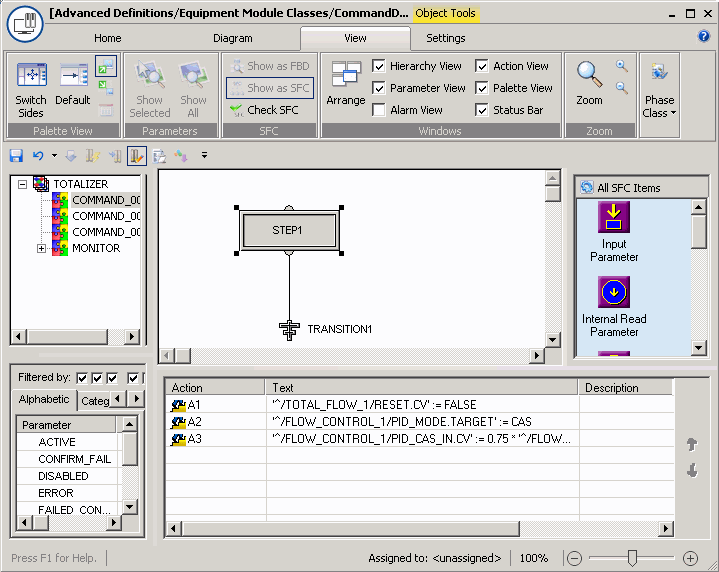

Configure the logic for COMMAND_00001 (Totalize_fast)

The logic for Totalize_accurate is very similar to that for Totalize_fast. The main difference is that in the third action, the flow setpoint for FLOW_CONTRO_1 is assigned .25 so the loop setpoint is 25% of the SP high limit for more accurate filling of the last 10% of the desired input amount. You can configure the logic as in the procedure above or you can simply copy and paste the step action expressions from Command_00001 to Command_00002 and then change the 0.75 to 0.25.